Bridge Design Concept
STEEL + UHPC | 40M SPAN | ZÜRICH
Computational optimization of a composite superstructure. Focused on integral abutments to eliminate mechanical bearings and reduce embodied carbon through material efficiency.


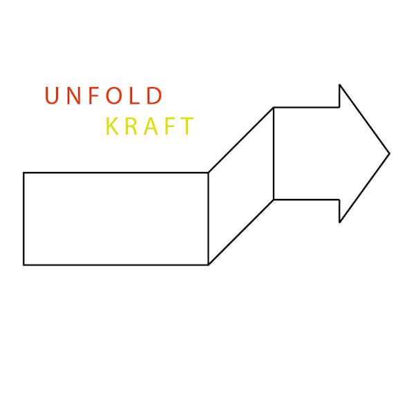
Unfolding strength — from research to structure
Unfold Kraft is a specialist consultancy in fatigue design, structural stability, and additive manufacturing (WAAM), grounded in doctoral research at ETH Zürich and affiliated work at Empa. This is backed by hands-on material testing and characterization across concrete, masonry, steel, and glass, and by field experience with reclaimed materials and renovation construction in the United States. Unfold Kraft partners with engineering and architecture firms as a technical sub-consultant on fatigue-critical and research-driven structural design — providing specialist analysis and conceptual input alongside the firm of record.
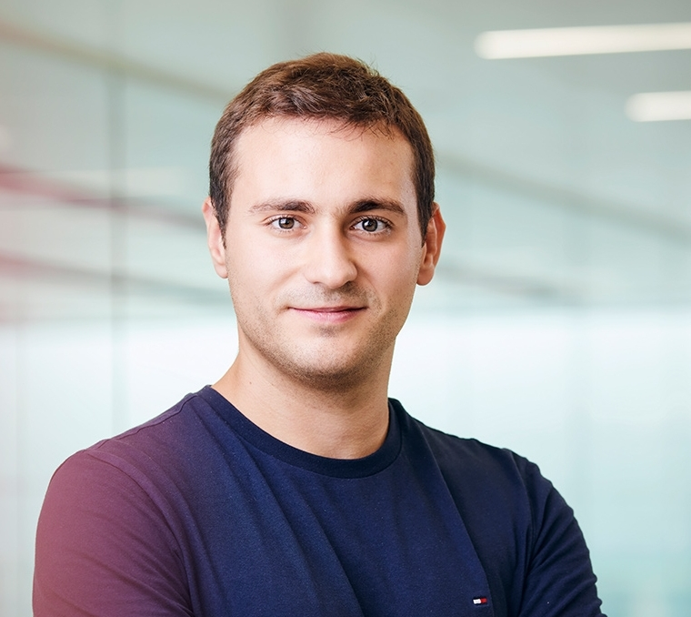
I'm a structural engineer based in Zürich, currently pursuing a doctorate at ETH and working with Empa on fatigue and additive manufacturing. Before that, I cut my teeth on renovation sites in the US — which is probably why I still like getting my hands on the material, not just the model. Happy to talk through a project, however early-stage.
Computational optimization of a composite superstructure. Focused on integral abutments to eliminate mechanical bearings and reduce embodied carbon through material efficiency.
Schematic design for a campus academic building addition and renovation, addressing 500-year flood resilience through an elevated pile foundation and bathtub-style basement, an 85% embodied carbon reduction versus an equivalent concrete structure via a carbon-negative CLT superstructure, and an integrated energy strategy combining roof PV, skylights, and efficient glazing.
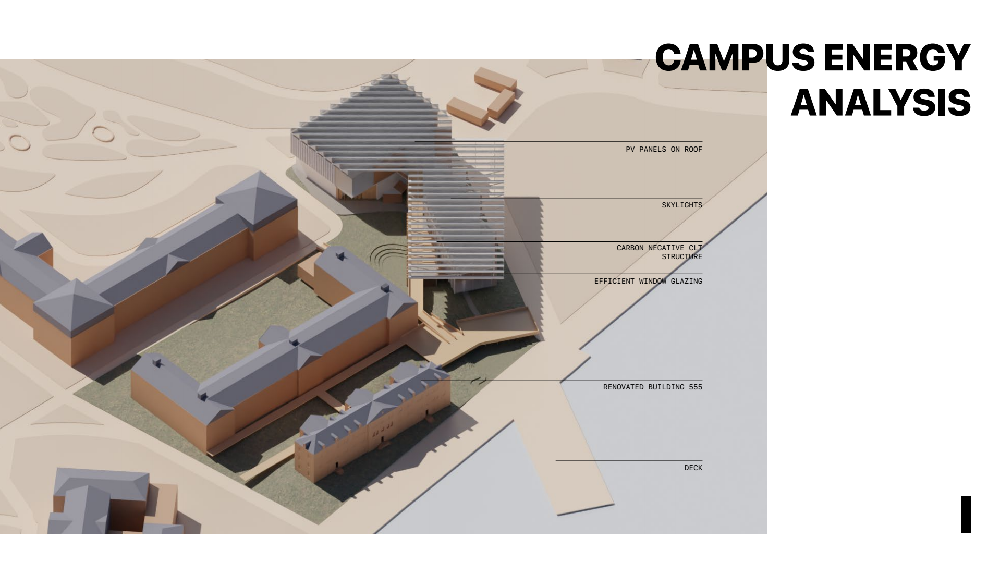
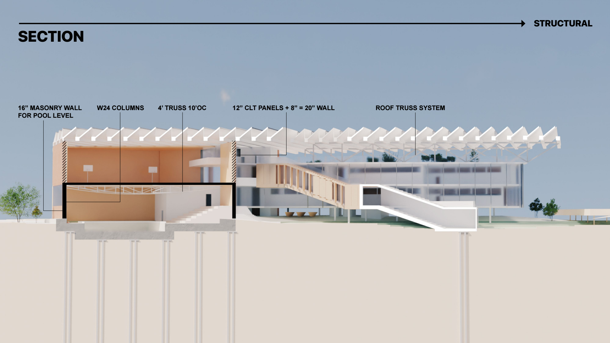
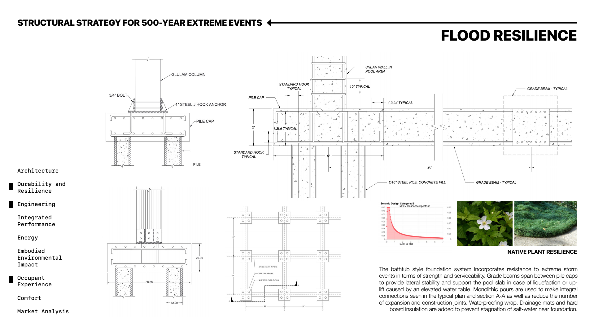
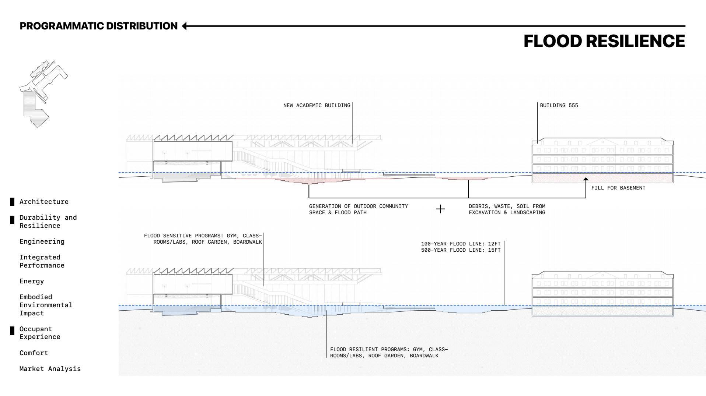
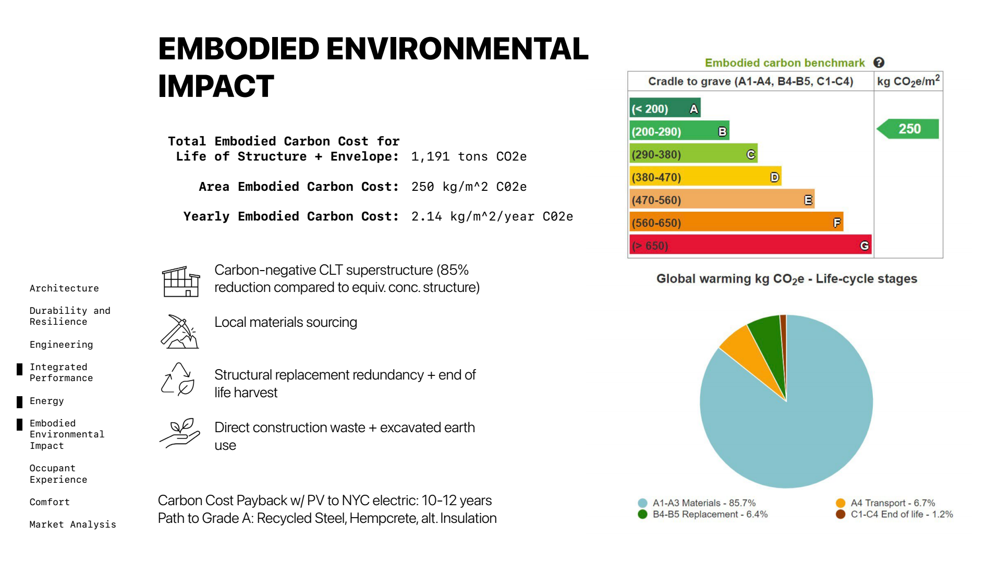
Design and execution oversight of a lateral bracing system for a heavy-timber storage facility. Utilized reversible connections to align with circular construction principles.

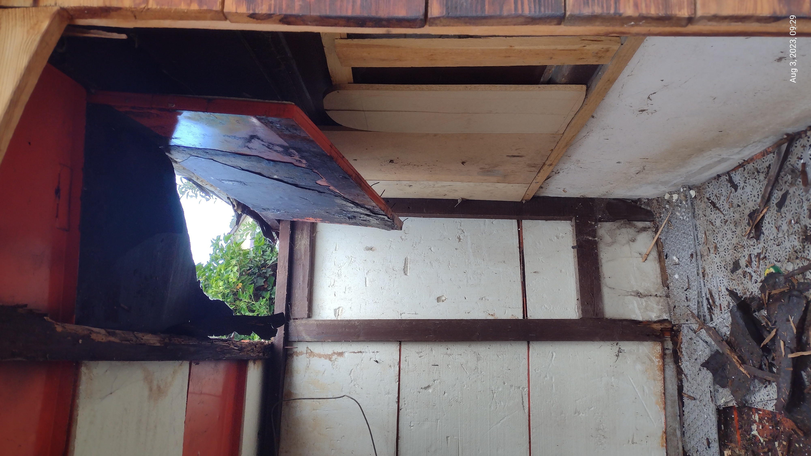
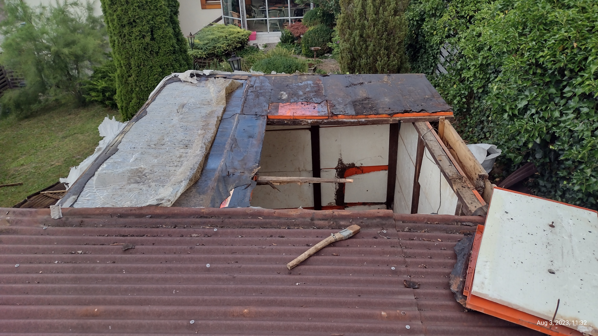
Structural validation and robotic fabrication of a temporary stage. The project focused on the logistics and technical assessment of 100% salvaged timber components.
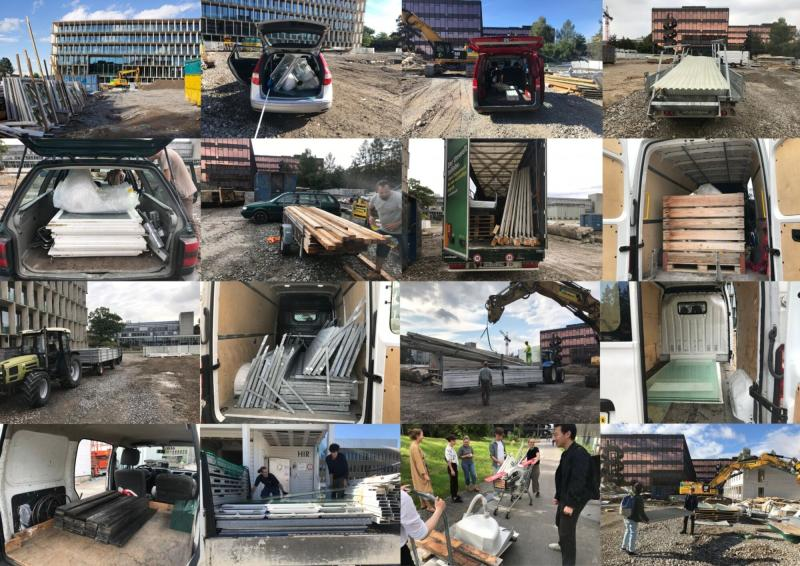


A series of structural objects including the Cello Stand and DWWLA Lamp, exploring the intersection of structural stability and industrial aesthetics.
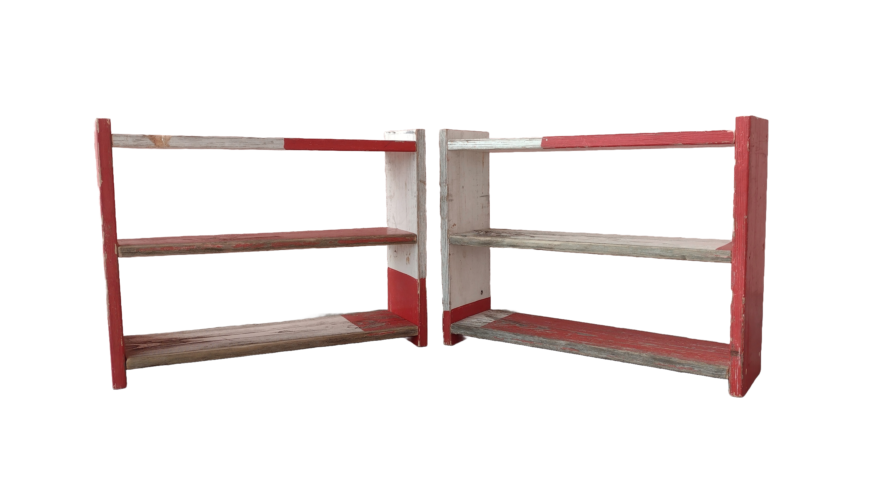

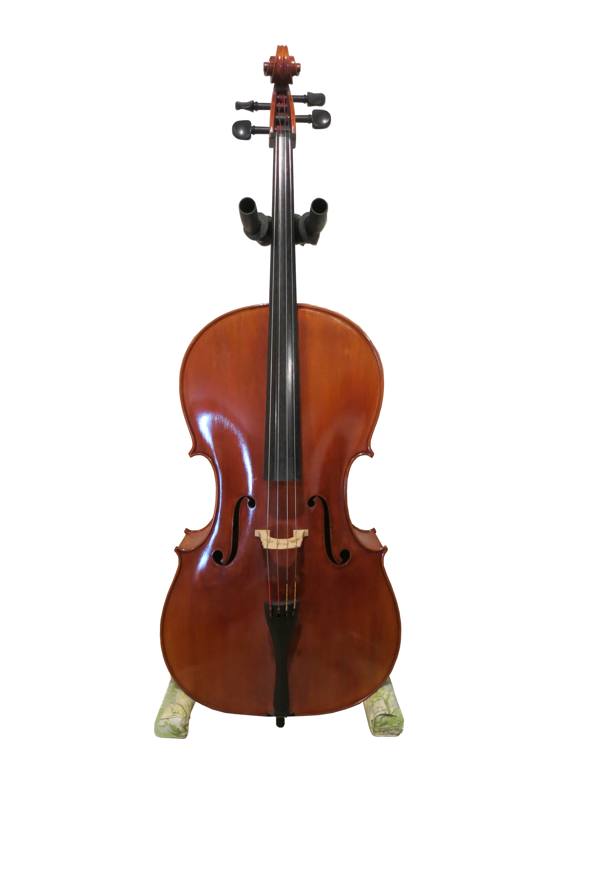


A welded steel object built from a reclaimed ammunition can and salvaged plumbing fittings, exploring functional assembly from mismatched reclaimed hardware.
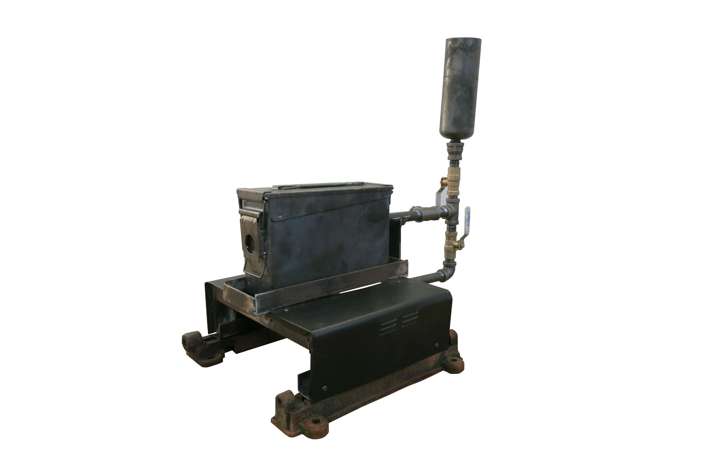
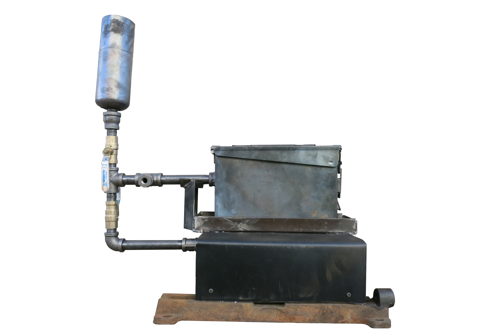
Fatigue-safe design and assessment for welded, additively manufactured, and cyclically loaded structures.
Feasibility studies, connection design, and process-aware detailing for wire arc additively manufactured structural components.
Buckling, second-order, and system-level stability analysis for slender or unconventional structural geometries.
Technical assessment and risk-based validation for the structural reuse of salvaged steel, timber, and masonry components.
Materials Testing & Characterization — Hands-on testing and characterization across concrete, masonry, steel, and glass, providing the empirical basis for fatigue assessment, reuse feasibility, and novel-material structural design.
For scopes outside this focus, Unfold Kraft can help direct clients to the right specialist or firm.